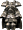
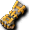
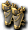
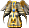
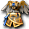
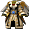
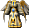
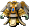

金屬砲皮格
我們伺服器實際的怪物設定（不是日版 wiki 的資料）。
能力值
| 項目 | 本伺服器 | 日版 wiki |
| 等級 | 88 | 85 |
| HP | 101076～111183 | 101,076 |
| AC | 15 | -34 |
| MC | 30 | -38 |
| AAR | 30 | 10 |
| SAR | 32 | 26 |
| STR | 86 | 81 |
| DEX | 30 | 61 |
| INT | 25 | 21 |
| WIS | 25 | 21 |
| CON | 118 | 91 |
| 經驗值 | 100000 | 36770 |
| 名聲值 | 400 | 7800 |
| 金錢 | 8000 | 2160 |
| 攻擊屬性 | 隨機 | 地 |
| 防禦屬性 | 隨機 | 地 |
出現地圖
| 地圖 | 數量 | 出現位置 |
| 東方鐵甲船6-1 | 10～14 | 範圍 (1,1)-(128,128) |
掉落物品
| 道具 | 基本機率 |
 重型長靴 重型長靴 | 0.05% |
| 牛帽子 | 0.05% |
 重型長靴 | 0.05% |
 暗黑復仇者護腕 | 0.05% |
| 雙手格亨納之斧 | 0.05% |
| 紫色后冠(粉) | 0.05% |
 生鏽的斯坎達倫之板甲 生鏽的斯坎達倫之板甲 | 0.05% |
 斯坎達倫之外袍 斯坎達倫之外袍 | 0.05% |
 斯坎達倫之女法衣 斯坎達倫之女法衣 | 0.05% |
| 斯坎達倫之女外袍 | 0.05% |
| 不穩定的斯坎達倫之女外袍 | 0.05% |
| 斯坎達倫之女守護甲 | 0.05% |
| 不穩定的斯坎達倫之拉皮內斯 | 0.05% |
| 不穩定的斯坎達倫之彎刀 | 0.05% |
 雙手斯坎達倫之斧 雙手斯坎達倫之斧 | 0.05% |
 不穩定的斯坎達倫之護膝 | 0.05% |
| 生鏽的斯坎達倫之豎琴(雙手) | 0.05% |
 生鏽的斯坎達倫之項鍊 生鏽的斯坎達倫之項鍊 | 0.05% |
 生鏽的斯坎達倫之珠(雙手) 生鏽的斯坎達倫之珠(雙手) | 0.05% |
| 不穩定的斯坎達倫之珠(雙手) | 0.05% |
 不穩定的斯坎達倫之劍 不穩定的斯坎達倫之劍 | 0.05% |
| 生鏽的斯坎達倫之法冠 | 0.05% |
| 生鏽的斯坎達倫之女法冠 | 0.05% |
| 不穩定的斯坎達倫之女法冠 | 0.05% |
| 腐朽的賽帕長袍 | 0.05% |
| 冰凍頭飾-壹式 | 0.05% |
| 冰凍頭飾-壹式 | 0.05% |
| 冰凍頭飾-貳式 | 0.05% |
| 冰凍護肩-壹式 | 0.05% |
| 冰凍之鞭 | 0.05% |
| 冰凍法杖 | 0.05% |
| 冰凍指虎 | 0.05% |
| 冰凍魔法卡組-壹式 | 0.05% |
| 帕爾塞斯之板甲 | 0.05% |
 帕爾塞斯之法衣 帕爾塞斯之法衣 | 0.05% |
| 生鏽的帕爾塞斯之法衣 | 0.05% |
| 不穩定的帕爾塞斯之法衣 | 0.05% |
 帕爾塞斯之聖袍 | 0.05% |
 生鏽的帕爾塞斯之武服 | 0.05% |
| 不穩定的帕爾塞斯之守護甲 | 0.05% |
 帕爾塞斯之女緊身衣 | 0.05% |
| 生鏽的帕爾塞斯之女緊身衣 | 0.05% |
 生鏽的帕爾塞斯之女聖袍 | 0.05% |
 帕爾塞斯之女外袍 | 0.05% |
 生鏽的帕爾塞斯之彎刀 生鏽的帕爾塞斯之彎刀 | 0.05% |
 生鏽的帕爾塞斯之腰帶 生鏽的帕爾塞斯之腰帶 | 0.05% |
| 生鏽的帕爾塞斯之耳環 | 0.05% |
| 不穩定的帕爾塞斯之耳環 | 0.05% |
 生鏽的帕爾塞斯之女戰盔 生鏽的帕爾塞斯之女戰盔 | 0.05% |
| 不穩定的帕爾塞斯之指虎 | 0.05% |
| 生鏽的帕爾塞斯之魔法卡組 | 0.05% |
 不穩定的帕爾塞斯之項鍊 不穩定的帕爾塞斯之項鍊 | 0.05% |
 單手帕爾塞斯之法杖 單手帕爾塞斯之法杖 | 0.05% |
| 不穩定的帕爾塞斯之劍 | 0.05% |
 單手貝因豎琴 單手貝因豎琴 | 0.05% |
| 幻影復仇者護腕[Lv3] | 0.05% |
 幻影艾克薩耳環[Lv3] 幻影艾克薩耳環[Lv3] | 0.05% |
| 生者的邪念[凶] | 0.05% |
 幻影復仇者手套 幻影復仇者手套 | 0.05% |
 幻影專家之戒 幻影專家之戒 | 0.05% |
 狂怒寶珠-壹式 狂怒寶珠-壹式 | 0.05% |
 阿修蕾德之戒A 阿修蕾德之戒A | 0.05% |
| 單手音速吉他 | 0.05% |
 [商店用]庇祐紋章 [商店用]庇祐紋章 | 0.1% |
 [火魔法]守護強攻 [火魔法]守護強攻 | 0.1% |
| [商店用]尼特拉斯治療術 | 0.1% |
 [商店用]毒素炸彈 [商店用]毒素炸彈 | 0.1% |
| [商店用]風疾步伐 | 0.1% |
| 魔法之衣 | 1.5% |
 依魯特護膝 依魯特護膝 | 1.2% |
 賽帕魔力石碎片 賽帕魔力石碎片 | 3% |
基本機率再乘上伺服器的掉寶倍率；「隨機一件」是從一組道具裡抽一件。